Figura 2: Esquema del proceso de elución de un generador
María del Carmen Plancha Mansanet, Ángel Ramírez Navarro, Alejandra Abella Tarazona
La radiofarmacia es la especialidad sanitaria que estudia los aspectos farmacéuticos, químicos, bioquímicos, biológicos y físicos de los radiofármacos. Aplica dichos conocimientos a los procesos de diseño, producción, preparación, control de calidad y dispensación de los radiofármacos, tanto en su vertiente asistencial (diagnóstica y terapéutica) como en investigación.
Además, la radiofarmacia se responsabiliza del buen uso de los radiofármacos a través de la adecuada selección, custodia y gestión de los mismos, con el fin de conseguir una óptima utilización con calidad, seguridad y coste-efectividad de acuerdo con las exigencias de la buena práctica radiofarmacéutica y las normas de correcta preparación extemporánea de radiofármacos[i].
La Radiofarmacia también se ocupa de la utilización de los nucleidos como trazadores, así como de su empleo en procedimientos radiométricos tanto en la práctica clínica como en investigación.
|
Tabla 1. Propiedades físicas de los radionucleidos |
||||
|
Radio-nucleido |
Tipo decay |
T1/ 2 |
Eϒ MeV (abundancia) |
Método producción |
|
11C |
β+ |
20,3 min |
0,511* (200) |
Ciclotrón |
|
57Co |
CE |
271,8 d |
0,122 (86) 0,136 (10) |
Reactor |
|
51Cr |
CE |
27,7 d |
0,320 (10) |
Reactor |
|
137Cs |
β- |
30,07 a |
0,662 (95) |
Reactor |
|
67Cu |
β- |
61,9 h |
0,092 (11) 0,185 (49) |
Generador |
|
169Er |
β- |
9,3 d |
- |
Reactor |
|
18F |
β+ |
109,8 min |
0,511* (181) |
Ciclotrón |
|
67Ga |
CE |
78,26 h |
0,093 (38) 0,185 (24) 0,300 (16) |
Ciclotrón |
|
68Ga |
β+ |
67,8 min |
0,511* (178) |
Generador |
|
166Ho |
β- y γ |
27 h |
0,08 (6)
|
Reactor |
|
123I |
CE |
13,2 h |
0,027 RX (71) 0,031 RX (16) 0,159 (84) |
Ciclotrón |
|
125I |
CE |
59,4 d |
0,027 RX (115) 0,035 (6,7) |
Reactor
|
|
111In |
CE |
2,8 d |
0,023 Rx (68) 0,026 Rx (15) 0,172 (90) 0,247 (94) |
Ciclotrón |
|
131I |
β- y γ |
8,02 d |
0,284 (5,8) 0,364 (82) 0,637 (6,5) |
Reactor |
|
81mKr |
TI |
13,1 s |
0,191 (66) |
Generador |
|
177Lu |
β- y γ |
6,7 d |
0,208 (11) |
Reactor |
|
99Mo |
β- |
65,94 h |
0,740 (14) 0,778 (4,8) |
Reactor |
|
13N |
β+ |
9,97 min |
0,511* (200) |
Ciclotrón |
|
15O |
β+ |
122 s |
0,511* (200) |
Ciclotrón |
|
32P |
β- |
14,28 d |
- |
Reactor |
|
223Ra |
α, β y γ |
11,4 d |
0,01-1,27 (1,1) |
Reactor |
|
82Rb |
β+ |
75,6 s |
0,511 (189) 0,777 (13) |
Generador |
|
186Re |
β- |
89,2 h |
0,137 (9) |
Reactor |
|
188Re |
β- |
16,8 h |
0,155 (16) |
Reactor |
|
75Se |
γ |
118 d |
0,136 (59) 0,265 (60) |
Reactor |
|
153Sm |
β- y γ |
46,27 h |
0,103 (29) |
Reactor |
|
89Sr |
β- |
50,52 d |
- |
Reactor |
|
99mTc |
TI |
6,01 h |
0,140 (88) |
Generador |
|
201Tl |
CE |
72,94 h |
0,068 Rx (94) 0,167 (10) |
Ciclotrón |
|
133Xe |
β- y γ |
5,24 d |
0,081 (36) |
Reactor |
|
90Y |
β- |
64,08 h |
- |
Reactor |
|
TI = Transición isomérica CE = captura electrónica *energía resultante de la aniquilación del positrón. |
||||
Sea cual sea el tipo de emisión producida por una sustancia radiactiva siempre se cumple la ley fundamental de la desintegración radiactiva (“decay”) según la cual el número de núcleos radiactivos que se desintegran por unidad de tiempo (Actividad=At) depende de la actividad en un determinado tiempo inicial (A0) y del tiempo transcurrido entre este momento inicial y el momento de medida.
| 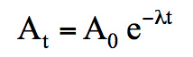 |
Siendo λ la constante de desintegración que es una característica de la sustancia radiactiva e independiente del estado físico en el que se encuentre (fig. 1).
| 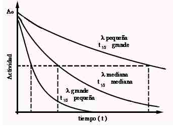 |
|
Figura 1: Ley de desintegración radiactiva |
A partir de la fórmula anterior podemos deducir el concepto de período de semidesintegración, que es el tiempo que debe transcurrir para que el número de átomos presentes quede reducido a la mitad.
| 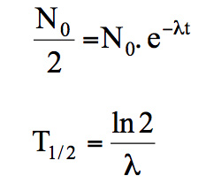 |
En esta expresión, el valor de T1/2 se conoce también como período de semidesintegración física.
Otro concepto es el de vida media (τ), definido como el tiempo medio que tarda en desintegrarse un átomo radiactivo y es la inversa de la constante de desintegración.
| 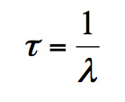 |
Se define un radiofármaco como cualquier producto que cuando esté preparado para su uso con una finalidad diagnóstica o terapéutica, contenga uno o más radionucleidos o isótopos radiactivos[ii],iii
Un radiofármaco está formado por una molécula orgánica o inorgánica, denominada ligando, que presenta afinidad biológica por un órgano o sistema de órganos, y que va a condicionar la ruta metabólica del radiofármaco dentro del organismo, y por un radionucleido responsable de la emisión de la radiación que permitirá la detección externa del radiofármaco, o bien la acción terapéutica.
Las concentraciones químicas de ligando presente en los radiofármacos son tan pequeñas, que por lo general, no tienen efecto farmacodinámico, pero están sujetos a estrictas regulaciones establecidas por las autoridades sanitarias. La evaluación de la seguridad y eficacia de los radiofármacos debe incluir, además de los parámetros generales de cualquier medicamento, los aspectos especiales de los radiofármacos[iii].
Número de desintegraciones de un material radiactivo por unidad de tiempo. Se expresa en Becquerelio (Bq) o en Curios (Ci) (1 Ci = 37 GBq).
Actividad por unidad de masa de dicho elemento. Se expresa en Bq/g o Ci/g.
Radiactividad por unidad de peso o de volumen del diluyente. Generalmente el diluyente es un líquido, agua o salino, aunque también puede ser un sólido. Se expresa en Bq/ml, Ci/ml, Bq/g o Ci/g.
Tiempo que requiere el organismo para eliminar la mitad de la dosis administrada, por medio de los procesos normales de eliminación.
Tiempo necesario para que un radionucleido pierda el 50% de su actividad mediante decaimiento radiactivo. Cada radionucleido tiene una vida media física propia.
Es el tiempo necesario para que la actividad de un radionucleido incorporado a un sistema biológico disminuya un 50% como resultado de la acción combinada del decaimiento radiactivo y la eliminación biológica. Su valor viene dado por la expresión:
| 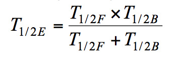 |
El radiofármaco atraviesa una barrera biológica en función del gradiente de concentración, es decir, pasando de la zona de menor concentración a la zona de mayor concentración.
Generalmente este proceso se produce en el caso de radiofármacos lipófilos y de pequeño tamaño como el 133Xe (ventilación).
Tiene lugar cuando un ión de una disolución del radiofármaco se intercambia por otro ión del mismo signo que se encuentra unido a una partícula sólida inmóvil.
Un ejemplo es el F-, que se intercambia por los grupos OH- presentes en la estructura de hidroxiapatita del hueso.
Se produce una microembolización de los capilares sanguíneos cuando se administran partículas de un tamaño superior al calibre de los mismos.
Algunos ejemplos son las microesferas o los macroagregados de albúmina marcados con 99mTc, que bloquean los capilares sanguíneos quedando retenidos en el pulmón y facilitando su visualización. La distribución de las partículas administradas es proporcional a la perfusión regional.
Las células de Kupffer del sistema reticuloendotelial tienen la capacidad de fagocitar partículas de pequeño tamaño, con un diámetro de 20-500 nm, que son reconocidas por receptores existentes en la superficie de las células.
El tamaño de las partículas determina el órgano diana. Las partículas más grandes son captadas por el bazo, las de mediano tamaño por el hígado y las más pequeñas son captadas por la médula ósea. Un ejemplo es el 99mTc-fitato coloidal.
Consiste en el transporte del radiofármaco en contra de un gradiente de concentración, lo que requiere un gasto energético.
Algunos ejemplos son el 131INa (tiroides) y el 201Tl (visualización del miocardio).
El bazo es el órgano encargado de la eliminación de los eritrocitos alterados o dañados de la circulación.
Si inyectamos eritrocitos marcados con 99mTc y sensibilizados con algún agente químico o con calor, estos son retirados de la circulación por el bazo, obteniéndose imágenes gammagráficas de dicho órgano.
Se produce cuando el radiofármaco participa en las rutas metabólicas de su análogo no marcado, actuando como sustrato de las mismas.
Un ejemplo es la 18F-FDG que se considera un indicador del metabolismo glicídico.
El radiofármaco se une a receptores presentes en la superficie de las células.
Ocurre en el caso del 111In-pentetreótida, que se une a los receptores de somatostatina y permite la visualización de tumores neuroendocrinos.
La distribución espacial del radiofármaco se restringe a un compartimento definido, como puede ser el sistema circulatorio, el líquido cefalorraquídeo etc.
Ocurre en el caso de los radiofármacos empleados en la cisternogammagrafía (111In-DTPA intratecal) o en estudio de pool sanguíneo (99mTc-hematíes).
Se administra un anticuerpo marcado diseñado para reconocer una estructura específica (antígeno) que se encuentra en determinadas células del cuerpo y unirse a ésta.
Se emplean anticuerpos marcados con 99mTc, 111In y 90Y, 131I.
El radiofármaco se mueve en una dirección determinada por la influencia de estímulos químicos.
Los leucocitos marcados con 99mTc se mueven por quimiotaxis hacia los focos inflamatorios e infecciosos.
El radiofármaco se adhiere a una superficie por formación de un enlace químico con alguno de los componentes de dicha superficie.
Se realiza en una unidad de radiofarmacia autorizada bajo la responsabilidad del especialista en radiofarmaciaii,iii siguiendo las normas de correcta preparación extemporánea de radiofármacosi, la guía de Buenas Prácticas de Preparación de Medicamentos estériles[iv] y la guía nº 3 de procedimientos generales para la preparación de radiofármacos[v].
Según actividad y volumen requerido. Si es necesario diluir hay que tener en cuenta la estabilidad. Utilizar el diluyente indicado por el fabricante.
Las soluciones coloidales y suspensiones deben agitarse antes de su dosificación y administración. No deben permanecer mucho tiempo en jeringa porque puede producirse adsorción.
Equipo reactivo: cualquier preparado industrial que deba combinarse con el radionucleido precursor para obtener el radiofármaco finaliii.
Precursor: todo radionucleido producido industrialmente para el marcado radiactivo de otras sustancias antes de su administracióniii.
Generador: cualquier sistema que incorpore un radionucleido padre que en su desintegración origina un radionucleido hijo, que se utilizará como parte integrante de un radiofármacoiii (fig. 2).
| |
|
Figura 2: Esquema del proceso de elución de un generador |
La preparación extemporánea de estos radiofármacos consiste en añadir al equipo reactivo (fig. 3) una actividad de 99mTcO4Na o radionucleido precursor (fig. 4) en un volumen adecuado para obtener la concentración radiactiva deseada. Finalmente, tras un periodo de incubación a la temperatura adecuada se obtiene el producto final. Esta preparación solo podrá realizarse bajo petición, mediante prescripción médica y si se cumplen las normas de correcta preparación extemporánea de radiofármacos para garantizar la calidad y seguridad del preparado final. Se realizará en cabina de flujo laminar grado A con entorno mínimo grado C o en aislador de grado A con entorno mínimo de grado Di.
| 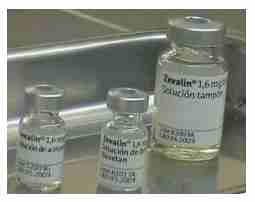 | 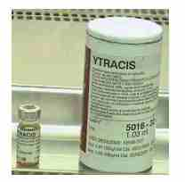 |
|
Figura 3: Equipo para la preparación extemporánea de 90Y-Zevalin |
Figura 4: Radionucleido precursor: Cloruro de itrio (90Y) |
Esta preparación solo podrá realizarse bajo petición, mediante prescripción médica y si se cumplen las normas de correcta preparación extemporánea de radiofármacos para garantizar la calidad y seguridad del preparado final. Se considera un procedimiento abierto, se realiza en cabina de seguridad biológica, como mínimo clase II tipo B, situada en un entorno grado B. En caso que de que la administración sea inmediata podrá permitirse un entorno de grado C, tras la realización de una evaluación de riesgos. Este tipo de preparación también podrá llevarse a cabo en aislador grado A con entorno mínimo de grado D. Estos equipos estarán destinados exclusivamente al marcaje de muestras autólogasi.
Independientemente del tipo de células el proceso requiere los siguientes pasos:
| 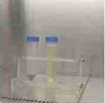 |
|
Figura 5: Retirada del radiofármaco mediante lavado y centrifugación |
A partir de la muestra sanguínea se obtiene el botón leucocitario por sedimentación y centrifugación para la retirada de hematíes y plaquetas respectivamente. El botón se marca con 99mTc-HMPAO recién preparado, o bien con 111In-oxina que permite obtener imágenes a partir de las 24 horas. (Procedimiento guía nº 1 de las guías de procedimientos radiofarmacéuticos de la Real Farmacopea Española[vi]).
El marcaje se realiza directamente sin separación previa de las otras células.
Los hematíes se marcan[vii],[viii] con 51CrO4Na2 o bien, con 99mTcO4Na y un agente reductor (Sn2+) para estudios in vivo e in vitro. El 99mTcO4 permite además realizar pruebas diagnósticas de imagen. En este caso el Sn2+ se puede obtener de cualquier equipo reactivo que contenga una cantidad de SnCl2.2H2O superior a 3 mg.
Existen tres procedimientos distintos para el marcaje de hematíes con 99mTcO4Na:
| 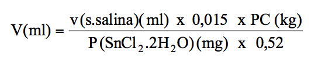 |
Siendo 0,52 el peso atómico Sn/ peso molecular SnCl2.2H2O.
Los hematíes marcados por los procedimientos “in vitro” e “in vivitro” se pueden desnaturalizar mediante técnicas químicas o calor (49,5 ºC durante 20 minutos en agitación) para poder realizar gammagrafía esplénica.
A partir de la muestra sanguínea se obtienen las plaquetas previa sedimentación y centrifugación para la retirada de hematíes y leucocitos respectivamente. Las plaquetas se marcan con 111In-oxina. (Procedimiento guía nº 4 de las guías de procedimientos radiofarmacéuticos de la Real Farmacopea Española[ix]).
Los radiofármacos PET son preparados de fabricación industrial que cuando están listos para ser administrados con finalidad diagnóstica contienen un radionucleido emisor de positrones (radionucleido PET).
Son nucleidos inestables que alcanzan la estabilidad mediante la emisión de positrones. Presentan períodos de semidesintegración corto-ultracorto dificultando la distribución a los centros alejados del lugar de producción.
Los dispositivos para la producción de radionucleidos PET de uso clínico pueden ser de dos tipos:
Perpendicularmente al plano de las placas se aplica un campo magnético. En el centro del sistema se encuentra una fuente de iones (F), de tal forma que mediante la acción combinada del campo eléctrico y magnético, los iones inician una trayectoria circular con un radio que va aumentando progresivamente, al mismo tiempo que aumenta su energía, hasta alcanzar la energía específica, haciéndolos incidir sobre el blanco (fig. 6).
|
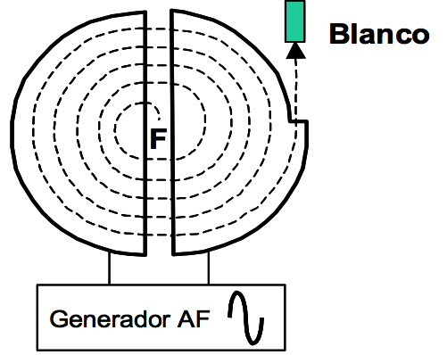 |
|
Figura 6: Ciclotrón |
En función del blanco utilizado se obtienen distintos radionucleidos PET (tabla 2).
|
Tabla 2 |
|
Radionucleidos PET producidos en ciclotrón |
|
Tabla 3 |
|
Radionucleidos PET obtenidos de generador |
La comercialización de estos generadores como es el caso actual del generador 68Ge/68Ga facilita el desarrollo de otros radiofármacos PET, ya que permite la obtención del radionucleido PET en unidades de radiofarmacia sin ciclotrón para la obtención del radiofármaco final a partir del marcaje de procedimientos de preparación extemporánea. Además por sus características físico-químicas permite el radiomarcaje de infinidad de péptidos.
La producción y comercialización de los radiofármacos PET se realiza en España desde los laboratorios de radiofármacos PET y tienen la consideración de medicamentos de fabricación industrial, por lo que requieren de la autorización y registro por parte de la Agencia Española de Medicamentos y Productos Sanitarios. Estos laboratorios son instalaciones que constan de un ciclotrón que produce el radionucleido PET y por otra parte de un área de producción donde se instalan los módulos de síntesis para que tenga lugar la reacción entre el radionucleido PET y el precursor correspondiente para la obtención del radiofármaco PET.
Actualmente los laboratorios están comercializando generadores y “casets” que contienen los reactivos específicos para instalarlos en el módulo de síntesis, de forma que se pueden conseguir síntesis automáticas de radiofármacos PET (fig. 7).
| 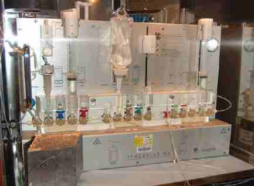 |
|
Figura 7: Módulo de síntesis |
Estos equipos permiten la elaboración de radiofármacos PET en aquellos hospitales donde exista una unidad de radiofarmacia PET autorizada, bajo la supervisión y control de un facultativo especialista en radiofarmacia, siempre que se realice en las condiciones y con los requisitos determinados reglamentariamente. Este caso no se considera un medicamento de fabricación industrial y no requiere autorización de comercialización (RD 1345/2007, por el que se regula el procedimiento de autorización, registro, y condiciones de dispensación de los medicamentos de uso humano fabricados industrialmente).
La 2-[18F]- fluoro-2-desoxi-D-glucosa (18FDG) como marcador del metabolismo glicídico es actualmente el radiofármaco PET más ampliamente utilizado porque permite la distribución desde los laboratorios de síntesis a los centros hospitalarios. No obstante, existen otros radiofármacos PET que pueden aportar información complementaria e incluso mejorar el diagnóstico, como son los marcadores de la proliferación celular, del remodelamiento óseo, de perfusión, de metabolismo oxidativo, de densidad de receptores que expresa el tumor.
Los radiofármacos marcados con 11C, 13N, 15O tienen períodos de semidesintegración tan cortos que obliga a que la radiosíntesis deba hacerse a pie de tomógrafo dificultando su aplicación.
La garantía de calidad engloba todos aquellos aspectos que afectan individual o colectivamente a la calidad del producto, con el objetivo de garantizar que los radiofármacos cumplan las especificaciones establecidas y reúnan la calidad, seguridad y eficacia requerida para su administración.
El sistema de garantía de calidad debe asegurar que los radiofármacos posean la calidad requerida para su uso y por tanto, que se preparan y controlan según las normas de correcta preparación extemporánea de radiofármacos en unidades de radiofarmaciaii, las guías nº 2 de control de calidad de radiofármacos en las unidades de radiofarmacia[x].
Los controles que deben realizarse al radiofármaco según normativa y guías son:
En el caso de los radiofármacos PET de fabricación industrial, tanto los procesos de obtención del radionucleido como la síntesis del radiofármaco deben estar muy protocolizados y automatizados para conseguir síntesis de corta duración debido al corto periodo de semidesintegración, gran eficiencia en la reacción para reducir el número de sustancias colaterales y finalmente reducir la dosimetría del personal. Además de los parámetros de control anteriormente descritos también se controla la pirogenicidad y esterilidad del preparado final.
Los controles a realizar al activímetro, equipo para medir la radioactividad de los radiofármacos son[xi]:
Las instalaciones se adecuarán a las operaciones que se vayan a realizar, permitiendo su funcionamiento, mantenimiento, limpieza y desinfección, evitando errores y contaminaciones cruzadas, de manera que se proteja la calidad de los productos o materiales y se asegure un bajo nivel de partículas y contaminación microbiana[xii],[xiii],iv.
Las unidades de radiofarmacia deben disponer de todos los documentos y registros necesarios para garantizar la trazabilidad del proceso de preparación de radiofármacos y el cumplimiento de las normas de correcta preparación extemporánea de radiofármacos, asó como disponer de un proceso sistemático de gestión de riesgos para la calidad, que fundamente la toma de decisiones en aspectos concretosi,[xiv].
Las manifestaciones clínicas asociadas a los problemas de la preparación de radiofármacos con tecnecio-99m son debidas a las impurezas radioquímicas:
El control de calidad realizado a las preparaciones radiofarmacéuticas nos informan de la presencia de estas impurezas radioquímicas.
La determinación del pH es vital para garantizar la calidad y eficacia de los radiofármacos, el cual debe estar dentro de un rango de pH bien definido en función del tipo de preparado.
Muchos problemas de formulación no son detectados rutinariamente con las técnicas de control de calidad empleadas.
Muchos de estos problemas que vamos a describir afectan por igual a la preparación de radiofármacos con otros radionucleidos pero por ser los radiofármacos marcados con tecnecio-99m los más utilizados nos centraremos en ellos.
Provoca disminución de la actividad específica de 99mTc. El 99Tc es químicamente igual 99mTc y compite con éste por el agente reductor y por los sitios de unión al ligando. El marcaje de radiofármacos con baja actividad específica genera un aumento de 99mTc libre afectando a la distribución del radiofármaco.
Puede disminuir el rendimiento de marcaje y la estabilidad del radiofármaco.
La capacidad reductora puede disminuir por deterioro u oxidación por el oxígeno del aire que puede introducirse en el vial durante el marcaje.
Inadecuada concentración puede disminuir el rendimiento de marcaje.
La biodistribución de los radiofármacos particulados tecneciados depende del tamaño de la partícula. El número de partículas es un parámetro importante a valorar para la obtención de una buena imagen diagnóstica y una baja toxicidad para el paciente.
Debe ser adecuada según el tipo de radiofármaco.
La alteración en el orden puede generar efectos drásticos en la obtención del producto final y por lo tanto en la distribución del radiofármaco.
Hay radiofármacos que requieren aumentar la temperatura durante el proceso de marcaje para acelerar la reacción. Inadecuada temperatura, tiempo, volumen y configuración pueden afectar a la pureza radioquímica y por tanto a la distribución.
Inadecuado tiempo de incubación puede disminuir la pureza radioquímica. La temperatura de los reactivos durante el proceso de incubación puede afectar el rendimiento de marcaje. Los reactivos deben estar a temperatura ambiente previo a su marcaje. La forma química y naturaleza del radiofármaco puede cambiar durante el proceso de incubación causando alteración de la distribución.
La disminución de la actividad específica puede alterar la distribución de los radiofármacos que presentan un mecanismo de localización saturable dificultando la imagen.
[i] Orden SND/939/2022, de 29 de septiembre, por la que se aprueban las normas de correcta preparación extemporánea de radiofármacos.
[ii] Real Decreto Legislativo 1/2015, de 24 de julio, por el que se aprueba el texto refundido de la Ley de garantías y uso racional de los medicamentos y productos sanitarios.
[iii] Real Decreto de 1345/2007, de 11 de octubre, por el que se regula el procedimiento de autorización, registro y condiciones de dispensación de los medicamentos de uso humano fabricados industrialmente.
[iv] Guía de buenas prácticas de preparación de medicamentos en servicios de farmacia hospitalaria. Junio 2014. Ministerio de Sanidad, Servicios Sociales e Igualdad.
[v] Guía nº 3 Procedimientos generales para la preparación de radiofármacos. 28 de septiembre de 2022 de la Agencia Española de Medicamentos y Productos Sanitarios. 28 de septiembre de 2022de la Agencia Española de Medicamentos y Productos Sanitarios.
[vi] Guía nº 1 “Marcaje de leucocitos con tecnecio (99mTc) exametazima (HM-PAO). 28 de septiembre de 2022de la Agencia Española de Medicamentos y Productos Sanitarios.
[vii] Guía nº 5 “Marcaje in vitro de hematíes con 51Cr. 28 de septiembre de 2022 de la Agencia Española de Medicamentos y Productos Sanitarios.
[viii] Guía nº 6 “Marcaje in vitro de hematíes con 99mTc. 28 de septiembre de 2022de la Agencia Española de Medicamentos y Productos Sanitarios.
[ix] Guía nº 4 “Marcaje de plaquetas con 111In-oxina. 28 de septiembre de 2022de la Agencia Española de Medicamentos y Productos Sanitarios.
[x] Guía nº 2 “Control de calidad de radiofármacos en unidades de Radiofarmacia. 28 de septiembre de 2022 de la Agencia Española de Medicamentos y Productos Sanitarios.
[xi] Real Decreto 1841/1997, de 5 de diciembre, por el que se establecen los criterios de calidad en medicina nuclear.
[xii] Guía nº 7 “Limpieza de locales y equipos de preparación de radiofármacos de una unidad radiofarmacia”.
[xiii] Guía nº 8 “Control de las áreas de preparación de radiofármacos de una unidad de radiofarmacia”.
[xiv] Guía nº 9: “Gestión de la documentación y registros de las unidades de radiofarmacia”